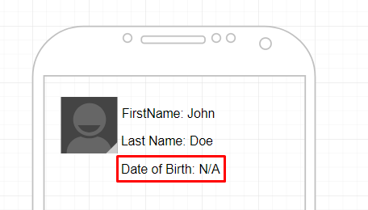
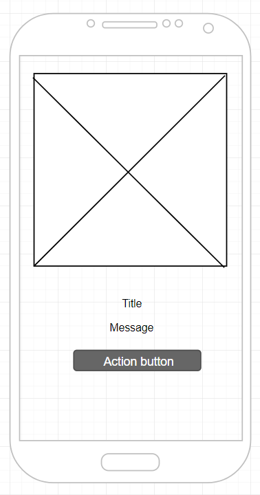
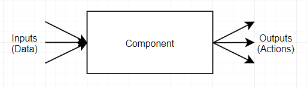
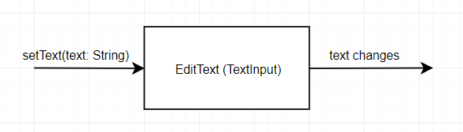

Dynamic mobile client development. Problem and concept.
Data and interfaces — are two of the most important things in development.
Data usually comes from/to server and tells application what should be used (and therefore shown to the user on UI)
One of the main challenges in mobile development is to be in sync with server. Server is updated immediately (often along with web). Publishing to Play Store takes some time (even not talking about AppStore and their app review). Also users might try to use older versions of app with newer versions of web/server (not updating application when newer version was published). Even more difficult to handle compatibility issues when there might be multiple servers with different versions on them, and application has to be flexible to work with all of them.
Coding to interfaces is important. Good interfaces allow to build flexible systems, provide better testability and maintainability. Flexible interfaces allow to write less boilerplate code for common solutions. However bad interfaces are even worse than having no interfaces at all. There are a lot of ways to make interfaces bad, but it is not exactly the topic. Here I will try to look at one particular type of interfaces — interfaces between Presentation layer and actual Views. And will look at particular property of such interfaces — flexibility/extensibility.
By flexibility/extensibility I mean ability to add new functionality (or remove old one) with as less changes to interface as possible. As a consequence implementation of such interface should also have as less changes as possible.
Profile screen⌗
Suppose we have screen in the app, where we have Profile information, such as first name, last name etc.

We query this data from server and the response could look like:
{
"firstName": "John",
"lastName": "Doe",
"birthDate": "2000-01-01"
}
We convert this DTO to some Profile domain model, then to View model, which is pushed to View:
// ViewModel
data class ProfileViewModel(
val firstName: String,
val lastName: String,
val birthDate: String
)
// Presenter
view.bindViewModel(profileViewModel)
// View
firstNameTextView.text = profileViewModel.firstName
lastNameTextView.text = profileViewModel.lastName
birthDateTextView.text = profileViewModel.birthDate
So far, so good. We have pretty clean interface between presenter and view which contains only one method bindViewModel(viewModel: ProfileViewModel) . But still it is way long to be flexible, because we missed view model’s interface. Though view model is just a data class, it still has its public interface which consists of getters (and optionally setters).
What would happen if we decided to add one more field to Profile such as mobileNumber ? We will have to add new property to view model class (which is in principle changing view model’s interface) and add one additional bind on View (and add new TextView in the view hierarchy) Not so many changes, looks like we’re good. And our interfaces work pretty well when we want to add fields. Same will happen if we decide to remove some field (we just remove property from view model class and remove binding and corresponding view).
Now suppose that we decided to relax our requirements and user might not have birth date. In this case response from server will not contain birth date field. And on UI in such case we should hide birth date section. Here is how the changes might look like:
// ViewModel
data class ProfileViewModel(
val firstName: String,
val lastName: String,
val birthDate: String,
**val isBirthDateVisible: Boolean**
)
// Presenter
view.bindViewModel(profileViewModel)
// View
firstNameTextView.text = profileViewModel.firstName
lastNameTextView.text = profileViewModel.lastName
birthDateTextView.text = profileViewModel.birthDate
**birthDateSection.isVisible = profileViewModel.isBirthDateVisible**
Again, not so many changes. Looks like everything is fine. We’re pretty flexible — we can change the screen according to new requirement pretty easy.
But there is an issue with this. Each change requires some work on server and client. Doing such changes on a client is boring, because you just put new fields, bind them, code base becomes bigger with quite a lot of duplication (or similar code). Server and clients become interconnected so that older client might not be compatible with server any more (for example client expects to have birth date, which was removed from newer version of the server)
Let’s then try to make sure that our apps cannot communicate with server they are not compatible with.
Blocking screen⌗
The easiest thing we can do is to have versioning on server and application, compare these versions e.g. on application startup and if application is not compatible to work with server — show some kind of “blocking” screen which tells user that current app is not supported any more and user has to download newer version.
So we have a screen and we need an interface for such screen. We are intelligent, so we want to have our screen as generic as possible. So we define that it will contain some cute image, title, message and button which will lead user to Play Store to download newer version of the app.

All the configuration will be provided by the server, and might look like:
{
"image": "https://...",
"title": "New version is ready!",
"message": "Please update your app",
"buttonText": "Update",
"link": "https://play.google.com/..."
}
Everything seems fine and generic. The only issue is that we’ve designed this screen with some assumptions, which might not be correct in the future. Also we might want to reuse that same screen in different place — maybe to show to the user some important notification, which should not open play store but contain only “OK” button.
What will happen if we decide to show two pieces of message, do not show image or show two buttons? The answer is — we will have to update our application, because it knows nothing about our needs.
But here it comes the issue. Blocking screen was designed to force users to update the app. So it means that old version of the application should have same configuration as new version of the server. But server is new, it might have different configuration. So that means that our interface was not flexible enough.
We want to update our app quickly according to new requirements. And we want to have flexible interfaces, so we don’t have to make a lot of changes to support new functionality. Also, we might want to have different functionalities for different versions of server.
All these leads us to the concept of dynamic screens which consists of two statements:
-
server responses to the client not business logic in DTOs, but ViewModels (or parts of them)
-
ViewModels constructed from Components
Components⌗
Basically Component is an abstraction over UI element (label, button etc.) or combination of UI elements (e.g. input text might have a hint, which is effectively label, but we can create component with input text and a hint — and call it with some special name).
Interfaces⌗
Important thing about component is that is has its clear interface. The simplest interface of a UI component is input/output. Input is data component can take into and output is number of actions that component can trigger.

For example, label has “String” text as input and can provide some action, when it is clicked.

Input text again has “String” text as input and can provide action when text inside input was changed (user typed something).

Of course, providing exhaustive set of components (with inputs and outputs) is not that easy. Inputs are mostly the easiest part because they are the most clear ones and mostly do not depend on the application context but on component itself. With actions it is a bit more tricky. Clicking on a component, for example, can open other screen, open browser etc. That means that in application we need to have set of actions ( OpenScren(screedId) , OpenBrowser(url) ), and these actions should be mapped onto particular keys.
All this should be static information on a server — configuration. If we want to add new component — we should update server configuration (i.e. register that component on a server). Each client should be able to work with provided configuration correctly. It means that if on server TextInput component is registered — client should be able to understand exactly what View to use and what its interfaces are.
Each configuration has its version, so it is pretty easy to know whether client is able to work with some particular server. We just need to compare versions of configurations.
Actions should be registered in server configuration as well. They might not be too specific like “OpenLoginScreenAction”. It is better to have more generic “OpenScreen(screenId)” and have set of screen ids registered in the configuration.
Styling⌗
Components should be visually attractive. That means that we should be able to provide specific style to a component. Of course we can try to set some low-level properties to component (such as text size or text color), but it is not that flexible. Design system comes to the rescue here. Instead of defining set of low-level properties, we can define high-level styles for each component (H1, Body etc.). Each of such high-level styles will be a combination of low-level properties.
As an easiest thing, one can take Material Design System. Or develop own design system.
These styles are also part of the server configuration.
Dynamic screens⌗
Dynamic screen — is a screen which doesn’t know exactly what it will contain. It is screen which takes as input some configuration of components to be shown. If we make our blocking screen as dynamic screen we will not define what exactly will be shown on it. It might be combination of image, title, message and button. But in different configuration if might be combination of title and button only.
Layouting⌗
The simplest example of dynamic screen is a screen which has a number of components positioned one by one vertically.

Of course, it is not necessarily the case and we might want to have some “layout components”, which provide some different positioning of its children (vertical, horizontal, relative and so on)
Navigation⌗
Navigation between components is specific case of actions. We might bind special keys to dynamic screens.
Some components (e.g. on clicks) will produce actions to navigate to particular screen.
So dynamic screen takes form server configuration of the screen and renders it accordingly. For example, for Profile screen we might have something like:
[
{
"type": "label",
"name": "First Name",
"value": "John",
"style": "body"
},
{
"type": "label",
"name": "Last Name",
"value": "Doe"
"style": "body"
}
]
Or for blocking screen we might have:
[
{
"type": "image",
"url": "https://..."
},
{
"type": "label",
"name": "Title",
"value": "some title",
},
{
"type": "label",
"name": "Message",
"value": "some message",
},
{
"type": "button",
"name": "action button",
"action": {
"type": "open_browser",
"url": "https://..."
}
}
]
Looks more generic and flexible, right?
In principle mobile application becomes just a kernel to do some work provided with configurations by server. And application itself is stored on a server, which can be easily and quickly updated (together with the mobile app if configuration of core parts — components, styles, actions, screen keys etc. — were not changed).
Offline mode⌗
One advantage of dynamic screens and dynamic navigation is that whole application has some configuration, which can be pre-cached from the server. This allows to have pretty good offline mode.
Conclusion⌗
Being a client developer it becomes more and more boring to add/remove some fields from the screen. And even create more screens. Often it feels like having screen as generic as possible has a lot of advantages -you should implement whole system only once and then all the configuration is done on the server.
Sometimes server guys say that they don’t want to have “client” logic on server. This is easily resolved by having “server API” and “client API”. And advantages of having client API are huge (even without all this dynamic stuff — one can at least minimize number of requests to server, have smaller responses etc.).
The whole concept described above is like server-side rendering for web but for mobile.
Concept is a bit raw and I haven’t tried to create applications using it. Also it requires some discipline from backend, client and design (though it is still not a downside).
Usually client developers are willing to send more of the functionality from client to server. And this is like next step to send client UI functionality to server as well.
Maybe it is not worth to try such approach on a project as a whole. Though some screens for sure might get benefits from it.
This is one of the points why I now don’t like client development as before and start to look around.
If I don’t be lazy, I’ll try to create some simple proof of this concept to see how it goes. But for now that’s it.
Thank you for your time